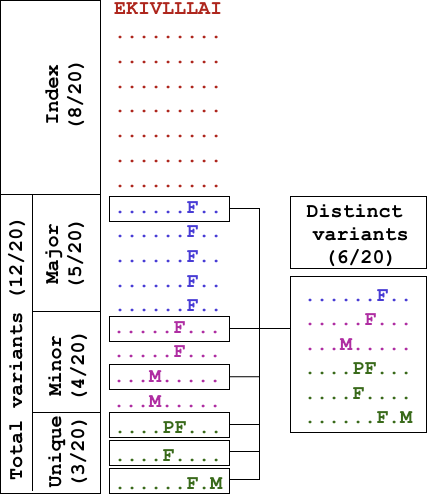

1.1. Sequence Diversity Dynamics Analyser for Viruses (DiMA)
Viral infectious diseases are a major public health threat. Sequence diversity is one of the major challenges in the design of diagnostic, prophylactic and therapeutic interventions against viruses. The diversity can be an outcome of a combination of underlying evolutionary processes (mutation, recombination, and assortment). A continuing goal is a greater understanding of viral proteome sequence diversity, the dynamics of substitutions, and effective strategies to overcome the diversity for drug or vaccine design.
Herein, we present Diversity Motif Analyser (DiMA), a tool designed to facilitate the quantification and dissection of viral sequence diversity dynamics. DiMA provides a quantitative measure of sequence diversity by use of Shannon’s entropy (PMID: 18698358), applied via a user-defined k-mer sliding window to a protein alignment. Additionally, DiMA further interrogates the diversity by dissecting the entropy at each aligned k-mer position to various diversity motifs (PMIDs: 32518710, 23593157), based on the incidence of distinct k-mer sequences at the position. At a given position, index is the predominant sequence and all other distinct k-mers are referred to as total variants to the index, sub-classified into major variant (the most common variant), minor variants (comprising of k-mers with incidence lower than major and higher than unique), and unique variants (k-mers seen only once in the alignment). Moreover, the description line of the sequences in the input alignment can be enriched for inclusion of meta-data as part of the analysis, such as spatio-temporal information, among others. DiMA outputs a JSON file that provides multiple facets of sequence diversity: sequence name, k-mer position, entropy, distinct k-mers at the position, and their incidence, motif classification and metadata (if available). DiMA enables comparative sequence diversity dynamics analyses, within and between proteins of a virus species, and proteomes of different species.
DiMA is an outcome of many years of viral studies on several different species since 2007. These studies have been published in peer-reviewed journals (PMIDs: 17434154, 18030326, 18698358, 19401763, 21471731, 22573867, 23593157, 26680743, 29322922, 29363421, 31874646, 34068495 and 32518710 and international conferences. Besides being available as a webserver, it can also be downloaded as a standalone client tool (https://github.com/PU-SDS/DiMA), particularly for big data analyses.
DiMA webserver has been under development since March 2020. It has been extensively tested with 18 datasets (9 structural and 9 non-structural proteins) from six viral species. External validation of our tool has been performed by three individuals, with a total of 36 datasets (18 structural and 18 non-structural proteins), originating from three viral species.
1.2. Accesibility
The webserver is publicly available at: https://dima.bezmialem.edu.tr/
1.3. Browser compatibility

1.4. Frontend/Backend Frameworks
Python FastAPI utilized for DiMA webserver Backend. ReactJS utilized for DiMA webserver Frontend.
1.5. Novel features
Features |
|||
|---|---|---|---|
Nucleic acid/amino acid sequence |
✅ / ✅ |
❌ / ✅ |
✅ / ✅ |
Shannon Entropy on user-defined sliding window |
✅ |
❌ |
✅ |
Size bias correction |
✅ |
❌ |
❌ |
Diversity motifs |
✅ |
❌ |
❌ |
Frequency calculation for each k-mer |
✅ |
❌ |
❌ |
Metadata inclusion |
✅ |
❌ |
❌ |
Concatenation of consecutive conserved sequences |
✅ |
✅ |
❌ |
Multiple interactive plots |
✅ |
❌ |
❌ |
Process alignments up to 100 megabytes (MB) |
✅⭐ |
❌ |
❌ |
⭐ Large file possible with CLI version.
1.6. Defining diversity motifs
For a given sequence alignment, all sequences at each of the aligned k-mer positions are quantified for distinct sequences and ranked-classified into diversity motifs based on their incidences, as described in Hu et al. (2013) (Supplementary Figure 1, see extract below) (PMID: 23593157).
{kind=link}
Figure 1. Definitions of diversity motifs. The ‘‘Index’’ nonamer is the most prevalent sequence, present in 8 of the 20 isolates. The ‘‘Major’’ variant is the most common variant of the index (5/20). ‘‘Minor’’ variants are multiple different repeated sequences, each with incidences less than the major variant. ‘‘Unique’’ variants are those represented by a single aligned sequence. Distinct variant sequences at a given nonamer position are the different sequence at the position; in this example one of major, two of minor, and three of unique.